S49 — Solar Panel बिजली कैसे बनाता है?
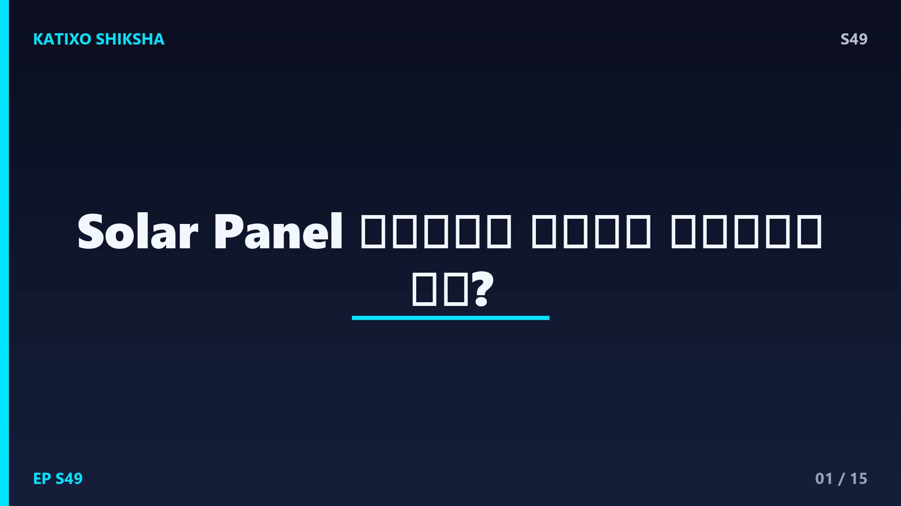
Slide 1दोस्तों, ज़रा सोचो, छत पर रखी एक नीली सी चमकदार plate, बिना किसी आवाज़, बिना किसी धुएं के, सीधे सूरज की रोशनी से बिजली बना देती है। ना कोयला, ना पानी, ना मोटर। सिर्फ धूप और चुपचाप electricity! ये जादू नहीं, ये है पक्की science जिसे कहते हैं photovoltaic effect। आज Katixo Shiksha पर हम इसी रहस्य को खोलेंगे, बिल्कुल आसान भाषा में। तुम जानोगे कि कैसे सूरज की एक किरण के अंदर छुपे photons, एक छोटे से solar cell के अंदर electrons को धक्का देकर पूरे घर की बत्ती जला देते हैं। चलो शुरू करते हैं!
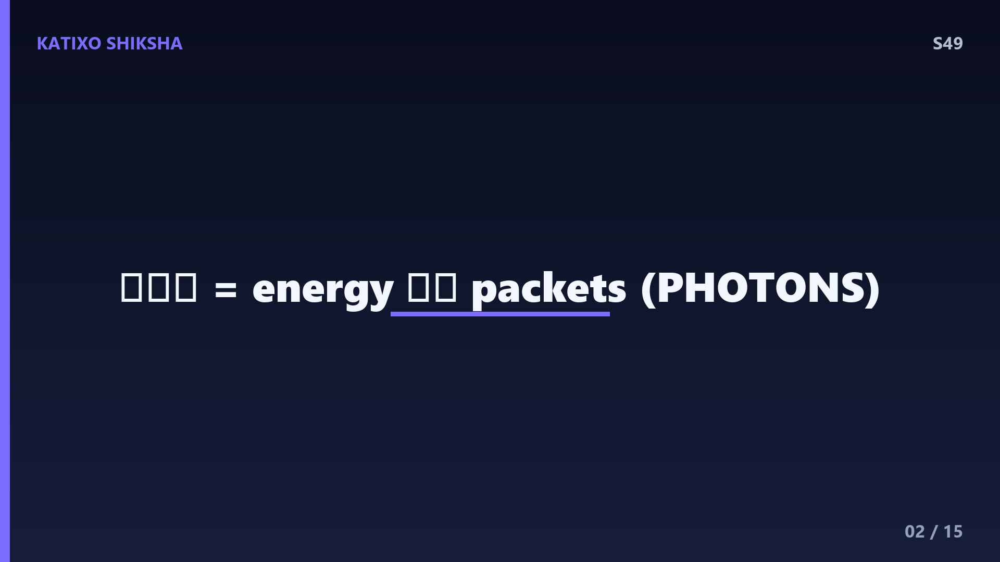
Slide 2सबसे पहले समझते हैं कि सूरज की रोशनी असल में है क्या। दोस्तों, धूप सिर्फ गर्मी और उजाला नहीं है, ये energy के नन्हे नन्हे packets से बनी होती है, जिन्हें कहते हैं photons। सोचो जैसे बारिश में अनगिनत बूँदें गिरती हैं, वैसे ही सूरज से हर सेकंड खरबों photons धरती पर बरसते हैं। हर photon अपने अंदर थोड़ी सी energy लेकर चलता है। यही energy जब किसी खास material से टकराती है, तो कमाल हो जाता है। solar panel का पूरा खेल इन्हीं photons की energy को पकड़कर बिजली में बदलने का है। तो असली hero है, ये photon!
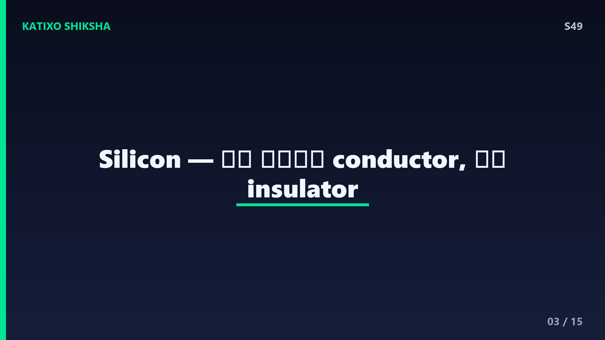
Slide 3अब सवाल ये है कि photons को बिजली में बदलने वाला वो खास material है कौन। उसका नाम है silicon, दोस्तों! यही वो semiconductor है जिससे solar panel बनते हैं। semiconductor का मतलब, ना तो पूरा conductor जो हमेशा बिजली बहाए, और ना ही पूरा insulator जो बिल्कुल रोक दे, बल्कि बीच का खिलाड़ी जो हालात के हिसाब से बिजली बहने देता है। मज़े की बात, silicon रेत में भरपूर मिलता है, यानी ये सस्ता और आसानी से मिलने वाला है। यही वजह है कि लगभग पूरी दुनिया के solar panel silicon से ही बनते हैं। समझो तो silicon इस कहानी का stage है।
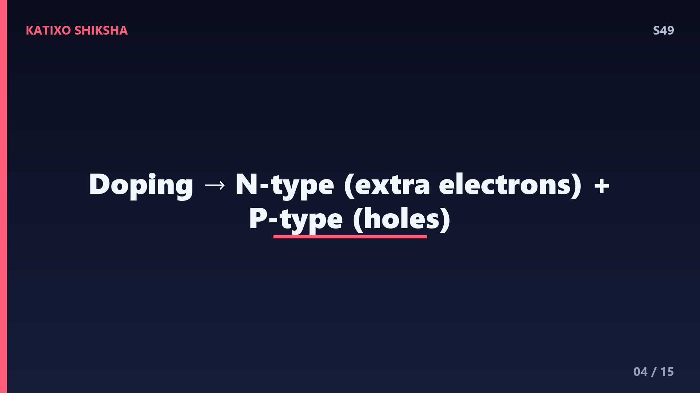
Slide 4अब आता है असली twist, दोस्तों! साफ silicon अकेले ज़्यादा कुछ नहीं कर पाता, इसलिए scientists उसमें जानबूझकर थोड़ी सी मिलावट करते हैं, जिसे कहते हैं doping। एक हिस्से में मिलाया जाता है phosphorus, जिससे बनता है N-type silicon, जिसमें extra electrons होते हैं, यानी negative charge वाले कण ज़्यादा। दूसरे हिस्से में मिलाया जाता है boron, जिससे बनता है P-type silicon, जिसमें electrons की कमी होती है, यानी खाली जगहें जिन्हें holes कहते हैं। एक तरफ ज़्यादा electrons, दूसरी तरफ कमी। बस यही दो अलग अलग नेचर वाले silicon मिलकर कमाल करने वाले हैं।
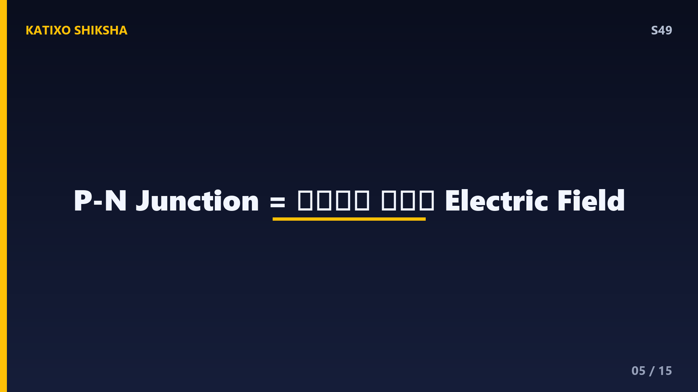
Slide 5जब ये N-type और P-type silicon आपस में जोड़े जाते हैं, तो उनके मिलने की जगह बनती है P-N junction। यहीं solar cell का दिल धड़कता है, दोस्तों! N-type के extra electrons कुदरती तौर पर P-type की खाली holes की ओर भागते हैं। इस उठापटक से junction पर एक छुपा हुआ electric field बन जाता है, समझो एक अदृश्य ढलान जो electrons को सिर्फ एक ही दिशा में जाने पर मजबूर करती है। ये electric field बहुत ज़रूरी है, क्योंकि यही आगे चलकर तय करेगा कि बिजली किस तरफ बहेगी। बिना इस junction के, solar cell बस एक बेकार पत्थर रह जाता।
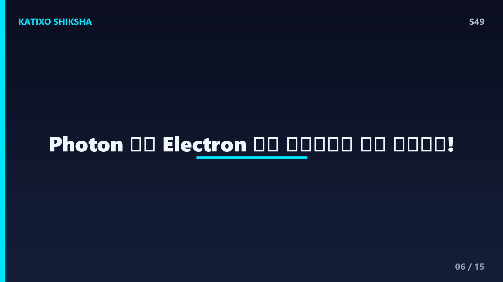
Slide 6अब सारे पात्र तैयार हैं, परदा उठता है! जैसे ही सूरज का एक photon solar cell से टकराता है, वो अपनी पूरी energy एक electron को दे देता है। सोचो जैसे carrom में striker आकर एक coin को ज़ोर से धक्का दे, वैसे ही photon उस electron को उसकी जगह से आज़ाद कर देता है। अब वो free electron इधर उधर घूमने लगता है। यही तो वो पल है जिसका पूरा panel इंतज़ार कर रहा था, दोस्तों। एक photon, एक electron को मुक्त करता है। और जब ऐसे लाखों photons लगातार टकराते हैं, तो लाखों electrons एक साथ आज़ाद हो उठते हैं।
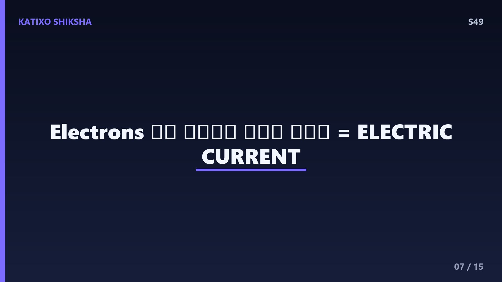
Slide 7अब ये free electrons यूँ ही इधर उधर नहीं भटकते, दोस्तों। याद है वो P-N junction वाला छुपा हुआ electric field? वही अब अपना काम दिखाता है। ये field सारे आज़ाद electrons को एक ही दिशा में, यानी N-type की तरफ धकेल देता है। जब बहुत सारे electrons एक ही दिशा में लगातार बहने लगते हैं, तो बनता है electric current। समझो जैसे पाइप में पानी एक तरफ बहे, वैसे ही तार में electrons एक तरफ बहते हैं। बस यही flow है बिजली। तो photon ने electron को आज़ाद किया, और electric field ने उसे current में बदल दिया।
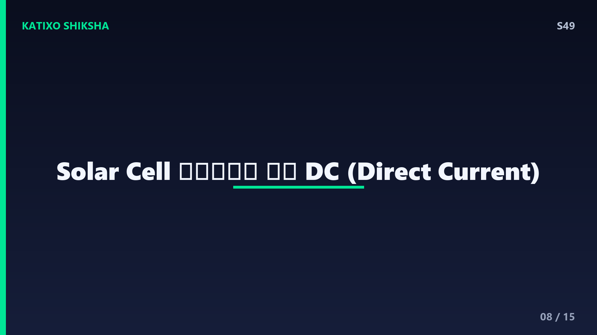
Slide 8अब इस current को काम पर लगाने के लिए solar cell के ऊपर और नीचे पतले metal के तार जोड़े जाते हैं, जो electrons के लिए रास्ता बनाते हैं। electrons इस तार के ज़रिए बाहर निकलते हैं, बल्ब या मोबाइल जैसे device से होकर गुजरते हैं, और फिर वापस cell में लौट आते हैं। यही पूरा loop electricity का चक्र पूरा करता है। ध्यान दो दोस्तों, ये जो बिजली बनती है वो होती है DC, यानी Direct Current, जिसमें electrons हमेशा एक ही दिशा में बहते हैं। battery भी DC ही देती है। तो एक solar cell सीधे DC बिजली पैदा करता है।
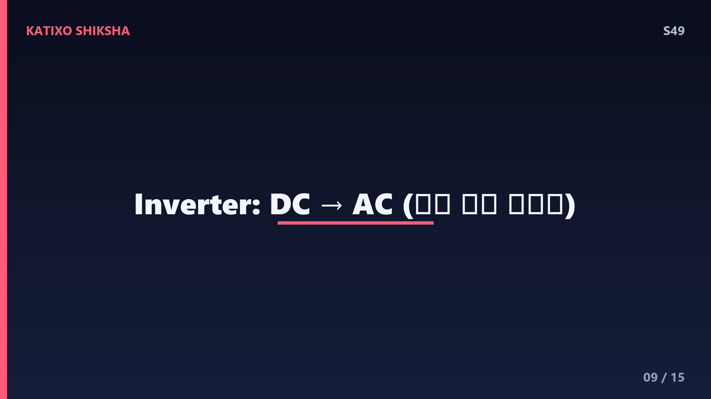
Slide 9लेकिन रुको दोस्तों, हमारे घर के पंखे, fridge और TV तो DC पर नहीं चलते, वो चलते हैं AC यानी Alternating Current पर, जिसमें बिजली की दिशा बार बार बदलती रहती है। तो अब क्या करें? यहाँ आता है एक ज़बरदस्त device जिसका नाम है inverter। inverter का काम है solar panel से आने वाली DC बिजली को AC में बदलना, ताकि वो हमारे घर के सारे appliances चला सके। समझो inverter एक translator है, जो panel की भाषा को घर की भाषा में बदल देता है। इसीलिए हर solar system में inverter एक ज़रूरी हिस्सा होता है।
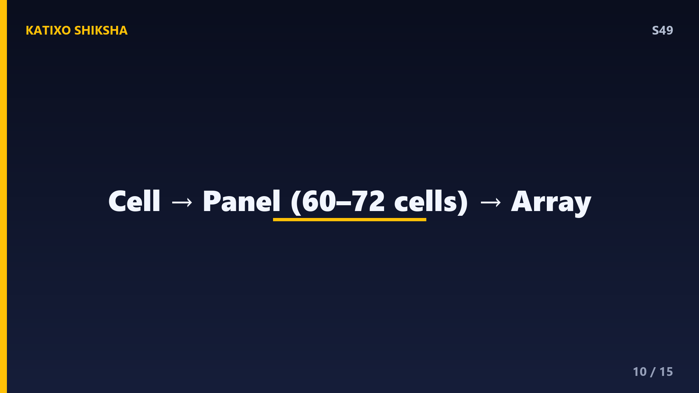
Slide 10अब एक राज़ की बात, दोस्तों। एक अकेला solar cell बहुत ही कम बिजली बनाता है, इतनी कम कि एक छोटा calculator ही मुश्किल से चले। इसलिए ढेर सारे solar cells को आपस में जोड़कर बनाया जाता है एक solar panel, जिसमें अक्सर साठ से बहत्तर cells होती हैं। और फिर कई panels को जोड़कर बनता है एक बड़ा solar array, जो पूरे घर या स्कूल को बिजली दे सके। समझो एक cell एक सिपाही है, panel एक टुकड़ी, और array पूरी सेना। जितने ज़्यादा cells, उतनी ज़्यादा बिजली। मिलकर ही ये असली ताकत बनाते हैं।
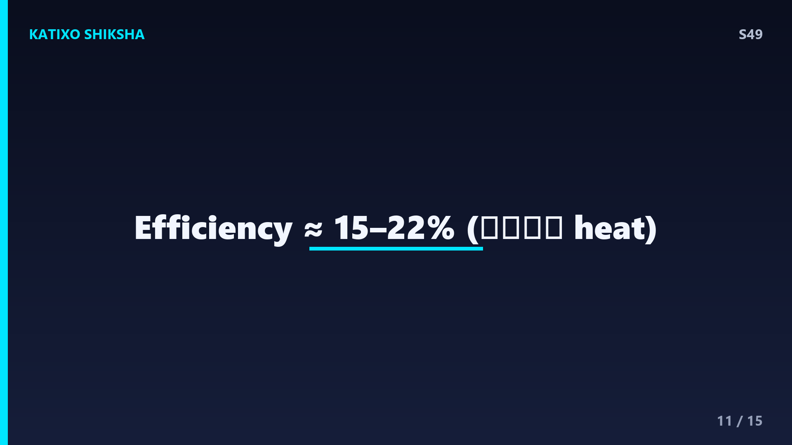
Slide 11अब एक सवाल जो ज़रूर तुम्हारे मन में आ रहा होगा, क्या solar panel सूरज की पूरी energy बिजली में बदल देता है? जवाब है, नहीं दोस्तों। आज के आम panels की efficiency करीब पंद्रह से बाईस percent होती है। यानी सूरज से आने वाली energy का सिर्फ इतना ही हिस्सा बिजली बन पाता है, बाकी ज़्यादातर गर्मी बनकर उड़ जाती है। सुनने में कम लगता है, पर सोचो, ये बिजली पूरी तरह मुफ्त और साफ है, बिना किसी प्रदूषण के! scientists लगातार ऐसे नए material खोज रहे हैं जिससे ये efficiency और बढ़े, और भविष्य में panels और ताकतवर बन जाएँ।
Slide 12अब बात करते हैं अपने देश की, दोस्तों। भारत में सूरज की कोई कमी नहीं, साल भर ज़बरदस्त धूप मिलती है, और यही हमारी सबसे बड़ी ताकत है। इसीलिए भारत solar energy में तेज़ी से आगे बढ़ रहा है। राजस्थान और गुजरात जैसी जगहों पर विशाल solar parks बने हैं, जहाँ लाखों panels मिलकर शहरों को रोशन करते हैं। सरकार लोगों को घर की छत पर panel लगाने के लिए प्रोत्साहन भी दे रही है। सोचो, अगर हर घर की छत बिजली बनाने लगे, तो ना बिजली का बिल भारी होगा, ना ही प्रदूषण। यही है clean energy का सपना!
Slide 13Quick brain check! दोस्तों, अब देखते हैं कितना समझे। तीन सवाल तैयार हो जाओ। पहला सवाल, सूरज की रोशनी के उन नन्हे energy packets का नाम क्या है जो electron को धक्का देते हैं? दूसरा सवाल, solar panel मुख्य रूप से किस semiconductor material से बनता है? और तीसरा सवाल, solar panel से बनी DC बिजली को घर में चलने वाली AC में बदलने वाले device का नाम क्या है? अब video को थोड़ी देर के लिए pause करो, थोड़ा सोचो, और अपने जवाब मन में या copy पर लिख लो। तैयार? चलो, अब मिलाते हैं जवाब!
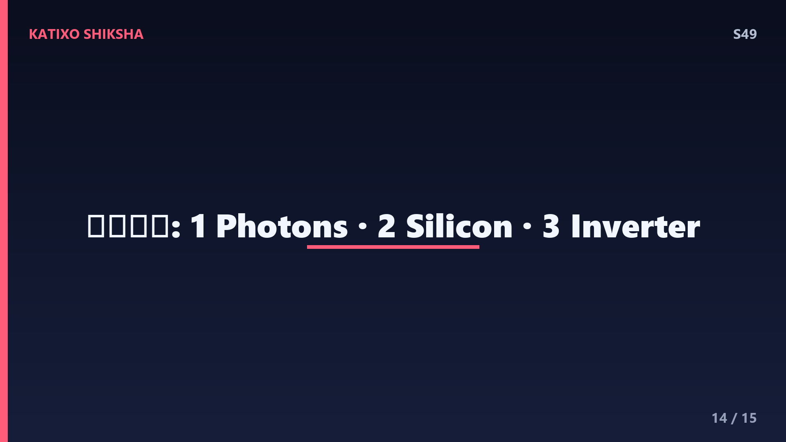
Slide 14तो दोस्तों, अब जवाब मिलाते हैं! पहले सवाल का जवाब, सूरज की रोशनी के उन energy packets को कहते हैं photons, यही हमारी कहानी के असली hero थे। दूसरे सवाल का जवाब, solar panel मुख्य रूप से बनता है silicon से, जो एक semiconductor है और रेत में भरपूर मिलता है। और तीसरे सवाल का जवाब, DC बिजली को AC में बदलने वाला device है inverter, जो panel की भाषा को घर की भाषा में बदलता है। बताओ, कितने सही हुए? अगर तीनों सही, तो शाबाश, तुम तो पक्के science champion हो! और अगर नहीं, तो कोई बात नहीं, फिर से देख लेना।
Slide 15तो चलो दोस्तों, एक झटके में पूरी कहानी दोहरा लें। सूरज से photons आए, silicon की P-type और N-type परतों के P-N junction से टकराए, electrons को आज़ाद किया, electric field ने उन्हें एक दिशा में बहाकर DC current बनाया, और inverter ने उसे AC में बदलकर घर पहुँचा दिया। ये थी solar panel की पूरी जादुई science! अगले episode में हम घूमेंगे एक बिल्कुल अलग दुनिया में, अपने ही शरीर के अंदर, और जानेंगे, हमारी आँत में खरबों bacteria क्यों होते हैं? मज़ेदार होने वाला है! Subscribe करना मत भूलना! Bye!